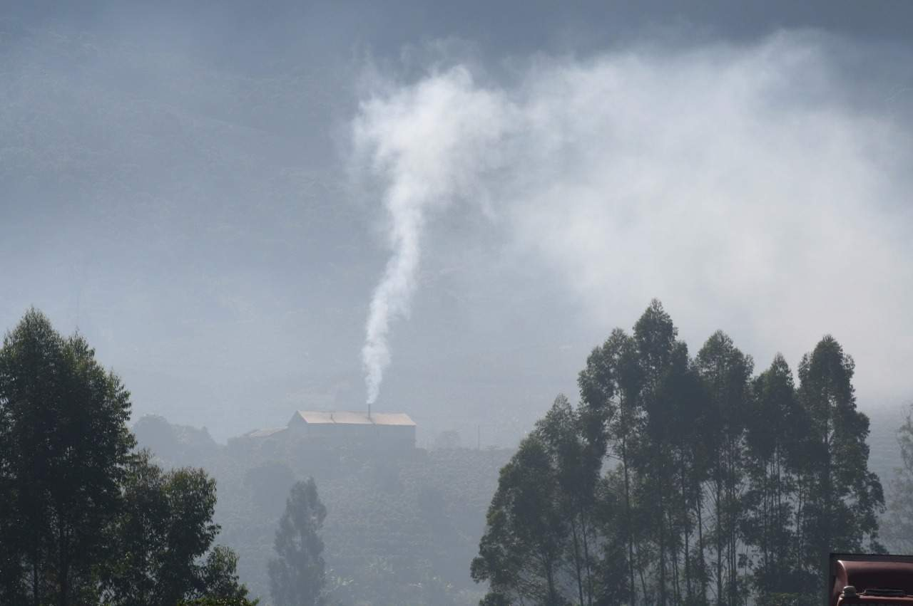

O mundo enfrenta desafios ambientais cada vez mais urgentes, e é nossa responsabilidade coletiva adotar práticas que promovam a preservação do planeta. Em um cenário onde as mudanças climáticas, a degradação dos recursos naturais e a poluição ameaçam o equilíbrio ecológico, a implementação de tecnologias e máquinas ecologicamente corretas se torna essencial. Essas soluções não apenas reduzem a emissão de poluentes e o consumo de recursos não renováveis, mas também contribuem para a eficiência e a sustentabilidade das operações.
No setor agrícola, especialmente, a adoção de práticas sustentáveis pode ter um impacto transformador. Máquinas projetadas para minimizar o uso de água, energia e produtos químicos não apenas ajudam a preservar os recursos naturais, mas também melhoram a qualidade do solo e das colheitas. Tecnologias avançadas, como sistemas de irrigação inteligente, tratores com menor emissão de gases e equipamentos que utilizam energia renovável, são exemplos de como a inovação pode harmonizar a produtividade com a proteção ambiental.
Os secadores de café são um exemplo claro de como a inovação pode ser aplicada para tornar a agricultura mais sustentável. Tradicionalmente, os secadores de café têm um impacto ambiental significativo devido ao uso de combustíveis fósseis, como lenha e diesel, que liberam grandes quantidades de gases de efeito estufa na atmosfera. Além disso, a queima de lenha, frequentemente retirada de florestas nativas, contribui para o desmatamento, reduzindo a biodiversidade e afetando o ciclo hidrológico. Esses impactos ambientais são agravados pelo fato de que muitos dos secadores convencionais operam com baixa eficiência energética, desperdiçando recursos e ampliando sua pegada ecológica.
A transição para secadores de café ecológicos representa um passo importante para mitigar esses problemas. Esses secadores são projetados para reduzir drasticamente as emissões de poluentes, utilizando fontes de energia renováveis, como a solar e a biomassa. A energia solar, em particular, é uma solução limpa e abundante, especialmente nas regiões tropicais onde o café é cultivado. Ao aproveitar essa fonte de energia, os secadores ecológicos eliminam a necessidade de combustíveis fósseis, reduzindo assim as emissões de dióxido de carbono (CO₂) e outros gases poluentes.
Além disso, a utilização de biomassa, como cascas de café, em vez de lenha ou diesel, permite que resíduos agrícolas sejam reaproveitados de maneira sustentável. Esse processo não só diminui a quantidade de lixo gerado, como também oferece uma alternativa energética que emite menos carbono em comparação com os métodos tradicionais. Isso contribui para a preservação das florestas e ajuda a manter o equilíbrio dos ecossistemas locais.
Os secadores ecológicos também se destacam pela eficiência energética. Eles são projetados para maximizar o uso de energia, garantindo que a quantidade mínima de calor seja necessária para secar os grãos de café de maneira eficaz. Isso não só reduz o consumo de energia, mas também melhora a qualidade do café, preservando suas propriedades sensoriais, como sabor e aroma. A eficiência energética desses secadores, combinada com o uso de fontes de energia renováveis, faz deles uma escolha ideal para produtores que desejam reduzir seu impacto ambiental e, ao mesmo tempo, melhorar a qualidade de seu produto.
Outro benefício importante dos secadores ecológicos é a melhoria da saúde pública nas comunidades agrícolas. A redução da emissão de fumaça e outros poluentes atmosféricos diminui significativamente os riscos de doenças respiratórias entre os trabalhadores e as comunidades vizinhas. A qualidade do ar melhorada pode levar a uma população mais saudável e produtiva, com menos faltas ao trabalho e menores custos médicos associados a problemas respiratórios.
A adoção de secadores de café ecológicos também pode gerar benefícios econômicos. Embora possam exigir um investimento inicial maior, os custos operacionais a longo prazo são reduzidos devido à eficiência energética e ao uso de fontes de energia de baixo custo ou gratuitas. Além disso, o café produzido de maneira sustentável pode ser comercializado como um produto premium, atraindo consumidores que valorizam práticas ambientalmente responsáveis e que estão dispostos a pagar mais por produtos que respeitam o meio ambiente.
Em última análise, a implementação de tecnologias ecológicas no setor agrícola, como os secadores de café sustentáveis, é um exemplo poderoso de como a inovação pode transformar práticas tradicionais e contribuir para a preservação do planeta. Ao reduzir as emissões de gases de efeito estufa, conservar os recursos naturais e melhorar a saúde pública, essas tecnologias ajudam a criar um futuro mais sustentável para a agricultura e para o mundo como um todo. Adotar essas soluções é não apenas uma responsabilidade, mas uma oportunidade para alinhar a produtividade agrícola com a proteção do meio ambiente, garantindo que as futuras gerações possam desfrutar de um planeta saudável e abundante.
Clique aqui